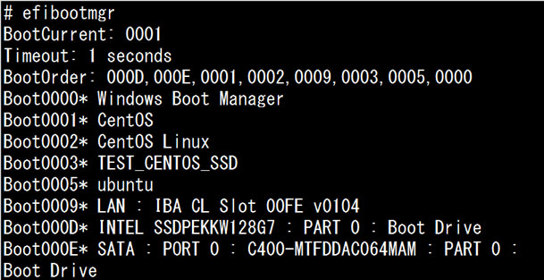
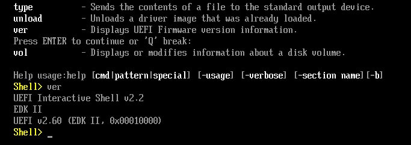

- 問題ID : 22201 ブートプロセスとGRUB
- 履歴
正解
GUIでマウス操作を行える
ESPは「/boot/efi」にマウントされる
OS上から起動エントリを表示、設定できる
解説
UEFI（Unified Extensible Firmware
Interface）は、BIOS（レガシーBIOS）に替わる新しい基本ファームウエアです。GUIでのマウス操作をサポートしていたり、ファームウェ
アが使用可能なメモリ量の上限が緩和されているなど、BIOSよりも高機能化しています。
ESP（EFI System Partition ）はUEFIシステムにおいて、物理的なマシンを起動し、ファームウエアが読み込まれた後、その後の起動シーケンスで最初にアクセスされる領域になります。ESPは「/boot/efi」にマウントされます。
UEFIの内容はOS上から設定できます。Linuxではefibootmgrコマンドを使って、UEFIの起動エントリを表示、設定できます。
したがって正解は
・GUIでマウス操作を行える
・ESPは「/boot/efi」にマウントされる
・OS上から起動エントリを表示、設定できる
です。
その他の選択肢は以下のとおりです。
・MBRを読み込む
・起動ディスクのサイズの上限は2TBである
BIOSの説明です。BIOSで起動ディスクとしてサポートしているMBR形式のパーティションテーブルの上限は2TBという制約があります。
参考
・UEFI(Unified Extensible Firmware Interface)
UEFIは、BIOS（レガシーBIOS）に替わる新しい基本ファームウエアで、BIOSにおける様々な制限（※）を乗り越えることを目的として、規格が定められています。
※CPUのモードが16ビットのリアルモードしか使えない、メモリ空間に制限がある、など
GUIでのマウス操作もサポートしており、BIOSよりも高機能化しています。
元々は、EFIというインテルとHPが提唱した規格の発展形であり、現在は、UEFIForumのもとで開発されています。
BIOSを置き換えることを目的に開発されたものですが、現状は、BIOSと完全に排他使用というわけではなく、実装によってBIOSと共存するような形の使用も多くあります。
当
然その場合には、BIOSの制約を受けてしまうため、本来のUEFIの機能を利用するには、完全にBIOSの置き換えとして使用するのが望ましいと言えま
す。しかしながら、長らく続いたBIOS時代の遺産もまだまだ多く、BIOSと併存させることで、既存の環境を生かす構成が多く見られます。また、広義の
意味で、UEFIをBIOSとして扱うものあります。
従来、BIOSでは、機器をいったん停止し、再起動時に設定を確認・変更を行っていましたが、UEFIでは、OSから直接に設定を参照・変更できるようになっています。
ま
た、取り入れられている技術的にも様々なメリットがあり、その一つに、大容量ストレージに容易に対応できることがあげられます。近年、ハードディスクをは
じめとするストレージの大容量化が著しいですが、レガシーなBIOSでは、この点においても不利で、2TB以上のものは扱えない場合が多くなっていまし
た。現在では、ストレージ側の進歩とそれに伴うソフトウエアの進歩により、必ずしもBIOSの制限で2TBが利用できないわけではありませんが、基本仕様
の古さによる機器や設定上の制約があり使いにくさは否めません。UEFIでは、こうした制約は大幅に解消され、大容量ストレージを容易に扱えるようになっ
ています。これは、パーティション・フォーマット等に関する面で、従来のMBRを用いた形式から、GPT（GUIDパーティションテーブル）を用いた方式
に変更することにより、起動時の領域や容量の制限などが大幅に拡張されていることが要因となっています。
・EFI System Partition (ESP）
ESPはUEFIシステムにおいて、物理的なマシンを起動し、ファームウエアが読み込まれた後、その後の起動シーケンスで最初にアクセスされる領域になります。ESPは「/boot/efi」にマウントされます。
マザーボードの実装により差はありますが、規格としては、FAT16またはFAT32でフォーマットされている必要があります。
・UEFIブートマネージャー
UEFI
では、マシン起動後にファームウエアが読み込まれると、ハードウエアを初期化し、UEFIブートマネージャーを起動します。UEFIブートマネージャーは
起動情報（OSをどこからどのようにロードするか）を管理するプログラムであり、役割としては、BIOSでのブートローダーのような役割を実行します。多
くの場合は、ブートローダーを起動エントリに持ち、そちらに制御を渡しますが、環境によってはブートローダーなしでの起動も可能です。
・efibootmgr
efibootmgrはUEFIブートマネージャーの起動エントリをOS上から操作するコマンドです。
上記のESPに格納されたブートローダーなどのプログラムを管理し、起動パラメータをブートローダーに渡したり、起動順序を変更したりなど、起動エントリの変更や設定を行います。
UEFIは、BIOSと同様にブートローダーを登録することもできますが、UEFI自体にブートローダーと同様の機能をもたすことができます。こうした機能もefibootmgrで操作可能です。
ESPに格納されたブートローダーをUEFIから見ると拡張子.efiがついたファイルとなっていて、efibootmgr上でも、EFIアプリケーションとして扱われます。
以下はefibootmgrコマンドの実行例です。
オプションを付けずに実行すると現在のブートエントリーを表示します。

・UEFI shell
UEFIでは、UEFIシェルと呼ばれるシェル環境を持っており、OSを起動せずにハードウエア周りの設定を行うことができ、デバイスドライバや、TCP/IPスタックも利用できます。
以下はUEFI shellでバージョンを表示させた例です。
